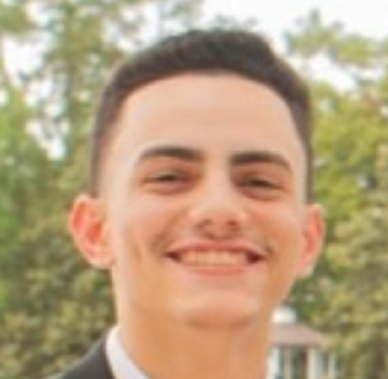
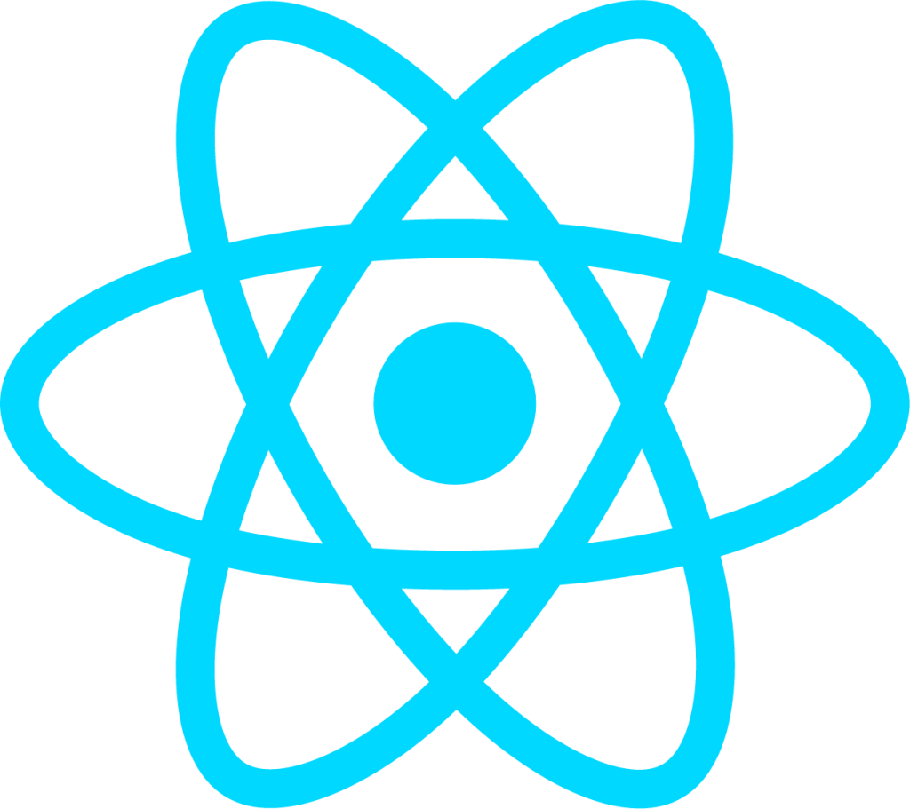

Background
I'm an aspiring Software Engineer that's currently a 5th-Year
Computer Engineering student at the University of Florida. During my
time at UF, I've honed my interest in the field to three specific
concentrations: Frontend Development, AI & Machine Learning, and
Project Management. I also have a fair understanding of Object
Oriented Programming; specifically with Java, C, & C++. Overall, I
have been introduced to most subfields within the field known as
Software Engineer which encompases endless possibilities. This
website is meant to share my journey as a Software Engineer.

Skills
Web Development



Projects